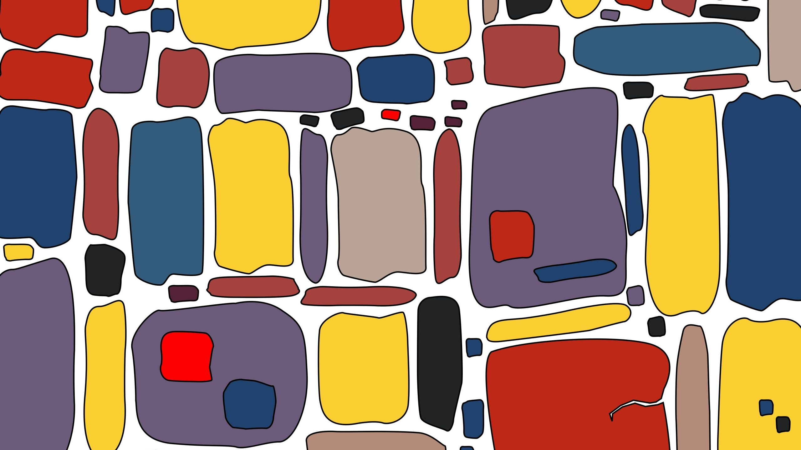

6 октября Google DeepMind представила EmbeddingGemma 2 — открытую модель эмбеддингов под лицензией Apache 2.0. Её главная особенность — нативная мультимодальность: текст, код, изображения, аудио и видео отображаются в единое векторное пространство размером 768 измерений. Модель построена на архитектуре Gemma 4 и позиционируется как лучшая по качеству среди мультимодальных эмбеддеров меньше миллиарда параметров.
Локальные эмбеддинги решают три задачи: приватность (данные не покидают устройство), задержка (не нужен сетевой запрос) и работа офлайн. Связка с генеративной Gemma 4 даёт полноценный on-device RAG: например, найти конкретный видеоролик в медиабиблиотеке по голосовому описанию или пройтись поиском по часам записей с совещаний. Предшественница EmbeddingGemma за год собрала более 20 млн загрузок — Google явно рассчитывает повторить успех уже в мультимодальном формате.
Модель уже выложена на Hugging Face, поддерживается transformers, sentence-transformers, vLLM, llama.cpp, Ollama, LM Studio и MLX; для дообучания есть инструкции от Unsloth, для хранения векторов — интеграция с Qdrant. Всё под коммерчески свободной лицензией — брать и использовать в продуктах можно без ограничений.